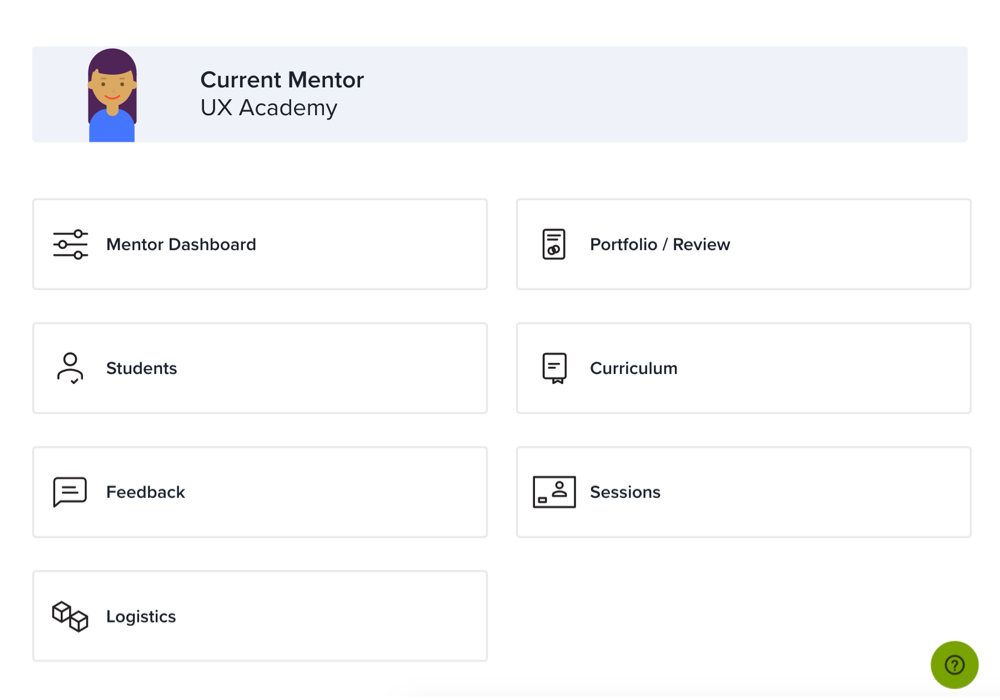
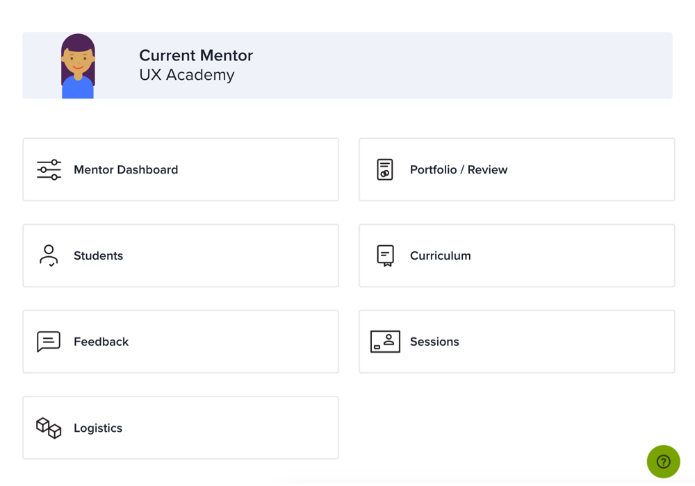

Designlab
Front End Developer and UX Designer for online design education platform

Designlab is an online platform for design education. We offer online curriculum and 1-on-1 mentorship with professional designers with the goal of helping people upskill and switch careers into User Experience (UX). As a hybrid developer and designer I work closely with the product team and engineers to build high-quality responsive and accessible web pages.
LUMA —
I co-designed and implemented the LUMA (lightweight, unified, modular, and accessible) Design System. Our design system allows us to build and prototype quickly using a set of predefined styles, colors, and components.
Designlab Blog —
I was Front End Developer and Co-designer for the redesign of the Designlab blog. When my team approached this project, we knew that many people were finding our high-quality content, but weren’t signing up for our newsletter. We conducted research for optimizing engagement, developed wireframes and prototypes, integrated our LUMA design system, and collaborated with engineers to fine-tune logic. The result was a 1100% increase in readers coming to our site organically and joining our email list.


Help Center —
The Designlab Help Center is the support site for our prospective and active students and mentors. We planned to overhaul our entire support experience by creating an easy-to-navigate knowledge base and increasing visibility of support throughout our website and product.
 

Enrollment User Flow Update —
Our team discovered that potential students were beginning the enrollment process to join our courses, but not completing the multi-stage form. I worked as the UX Designer and Front End Developer to help create a simpler, more user-friendly and responsive version this process. I created a user flow chart for the proposed changes, coded the logic for the one-page app with AngularJS, and refactored our form styles for accessibility.

Blog Article: 40 Tips For Inclusive And Accessible User Interface Design
As a big advocate for inclusive web design, I was excited to help compile this comprehensive list for the Designlab Blog. We cover everything from typography to forms to screen reader-friendly html to make your website or app easy to use for the broadest audience.
Blog Article: Everyday Creativity: Tech and Textiles with Ezra Lamb
I did an interview for the Designlab Blog about my personal work and how I find inspiration.